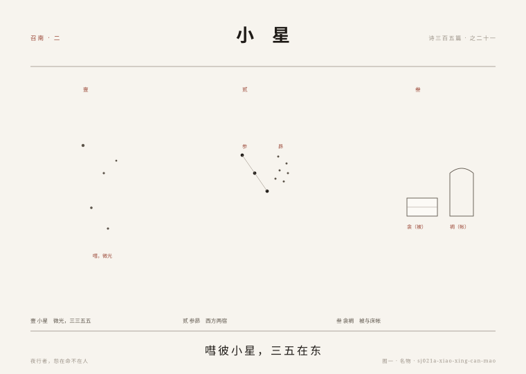
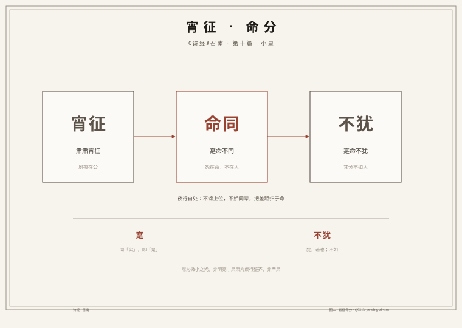

第二十一篇 小星
召南 · 之二 SJ021
朗读 · 普通话
依经文原文朗读，章次不读出；配古琴底乐，不改速、不加拖腔。全库同一音色（豆包 TTS），非播音员录制。
一 解题
诗三判：
- 谁在说：一个夜行的人。他跟着前头的人走，天还没亮就到了公庭。他不自言其苦，只抬头看星，低头说命。
- 说什么事：星小而稀，三五落在东边；他一路走，一夜不睡，抱着衾裯奔走于公事。末了两句——「寔命不同」「寔命不猶」——是全篇的落点。
- 为何编在此：召南写「已成之后靠什么维持」。此篇不在家内，在公事与行役之间：位分低的人，怎样在自己的分上把事做完。前几篇是备、是奉，此篇是「从役」。
《毛序》：「《小星》，贱妾进御于君也。无妒忌之行，惠及下，知命而不自言也。」——把作者读作妾媵，把全篇读作不妒之德。
朱子《诗集传》：「亦见贱妾之进御于君，而知其命之有分，然诗人美之也。」——朱子仍沿妾媵之说；而旧有另一读，以为使臣行役、夜归于公之诗，与妾媵无涉。
本库的看法：两说并列，不相裁断。
妾媵说与行役说，在字面上都成立——「夙夜在公」「抱衾與裯」既可解作侍御，也可解作从役。骨不在身份，在夜行者的自处：他把不平归到「命」上，怨的是命，不是人。「寔命不同」，不是认命低头，是不把怨毒指向同行的人。
二 经文
第一章
嘒彼小星，三五在東。肅肅宵征，夙夜在公。寔命不同！
第二章
嘒彼小星，維參與昴。肅肅宵征，抱衾與裯。寔命不猶！
分章：毛传、朱子皆二章，章五句。二章只换两组字：「三五在東」换「維參與昴」，「夙夜在公」换「抱衾與裯」；末句由「不同」进为「不猶」——同是言分，后者更进一层。
## 三 韵读
一章東韵沉而实，像脚步踩在夜里；二章幽韵收窄，「不猶」二字落得最轻，也最不肯响。全篇落脚声在「寔命」二字上：命字一出，怨就收回。
四 字义与名物
- 嘒（huì）——微小光明之貌。星虽小，光可见。不是「明亮」，恰是微弱。
- 三五——三三五五，言稀疏；一说指三颗五颗，一说即下章参、昴两宿之星数。
- 肃肃——疾行、整齐之貌。不是「严肃」，是脚步赶路。
- 宵征——夜行。宵，夜；征，行。
- 夙夜——早夜，从早到晚。
- 在公——在公家之事，供职于公庭。
- 寔（shí）——同「实」，即「是」「此」。不是「实在」的虚词，是「这实在是」。
- 参、昴（shēn
mǎo）——二十八宿之二，皆西方宿。参，一名伐；昴，一名留。
- 衾（qīn）——被。裯（chóu）——帐（一说襜，即床帐帷帐）。
- 不犹——不如。犹，若、如。
五 今译
第一章
微光闪烁的小星，三三五五落在东方。急急地夜行，从早到晚在公家。这实在是命分不同！
第二章
微光闪烁的小星，那是参宿与昴宿。急急地夜行，抱着被子与床帐。这实在是不如人！
译注：「抱衾與裯」译「抱着被子与床帐」，从行役携带卧具一解；若从侍御解，则是随君入寝。两解并存，译文取通行的从役一路。「不猶」译「不如人」，不译作「不相似」。
六 章旨
一章：在公。夜行而起，早夜在公；所见是疏星，所事是公事。
二章：从役。星点名到参、昴，身上带着衾裯；由「在公」到「随行」，形迹更具体。
二章合看：先言所历之时（宵征、夙夜），再言所携之物（衾裯），末了都归到一句「命」上。事是一件事，两章由远及近，由天候到随身。
七 诗教
- 赋：直陈夜行之事，星、步、衾裯、命，一路平铺，是赋体。
- 观：可观一「分」。位分低的人怎样自处——不谤上位，不妒同辈，把差距说成命。
- 群：从役非一人，「肃肃」是一行人整齐的脚步；命分之感，在群行之中显出。
- 怨：有怨而不发。「不同」「不猶」近怨，而怨止于命，不指实某人——这是怨而不怒。
八 分寸与边界
- 不可把此篇读成妾妇不妒的德教。《毛序》之说属于汉人的妇德框架；诗里只有夜行的人与疏星，坐实「进御」便先立了一座道德台子。
- 不可把「嘒」解作明亮。嘒是微小之光，正因为星小，才衬得夜长。
- 不可把「肃肃」解作庄重严肃。它是疾行整齐之貌，说的是赶路，不是态度。
- 不可把「寔」只当语气助词。寔＝实＝是，是「这实在是」，语气是有所认定，不是随口带过。
- 不可把「寔命不同」读作逆来顺受的投降。此篇的分寸在：怨在命，不在人；不迁怒，不等于服气。
九 存疑
- 作者身份：妾媵进御说（毛、朱）与使臣行役说并列。字面两通，本库不坐实，只取「夜役于公之人」。
- 「三五」所指：一说泛言星之稀疏，一说即参三昴五之数。本库两存，译文取稀疏一解。
- 「裯」为何物：一说床帐，一说襜（短衣 /
帷帐）。毛传「裯，襜幬也」，物制难定，本库取帐。
- 「命」的分量：一说知命安分（美），一说以命自宽而含不平（讽）。本库取「自处」一义，美讽皆不加深。
- 编次之由：何以置于摽有梅之后、江有汜之前，旧无定说；本库不考本事，只就篇次看它承前启后。
十 跨典
- 《召南·江有汜》——同卷。彼为弃妇自宽，此为夜役自处；一归于悔，一归于命，皆是把不平收回来。
- 《邶风·柏舟》「我心匪石，不可轉也」——彼之执不可转，与此之「知命」正相反：一守一安，可对看。
- 《左传·闵公二年》「夙夜在公」——古有「夙夜匪懈」之常言，此篇「在公」即奉公不懈之意。
- 《论语·季氏》「死生有命，富贵在天」——「命」字在先秦是所遇之分，未必是消极；读此篇可借《论语》见其语气。
- 《小雅·小宛》「肅肅宵征」类此——役夫夜行之辞，《雅》《风》同有，可比而观。
十一 双卡与图
双卡五对：
| 嘒（微光） |
三五（稀疏） |
| 宵征（夜行） |
在公（夙夜） |
| 参（伐） |
昴（留） |
| 衾（被） |
裯（帐） |
| 不同 |
不犹 |

图一 · 小星·参昴·衾裯 名物图

图二 · 宵征·命分 义理图
读图三处：
- 星小，不点满：嘒是微光，图上星只三五颗，疏落布在东边；画密了就不是「小星」。
- 参昴是两宿，各成一簇：参三星斜列，昴一聚小星；图上两簇分开，不混成一片。
- 衾与裯是随身卧具：被可叠，帐可卷；图上只须画出一物一卷，不必画出寝居之状。